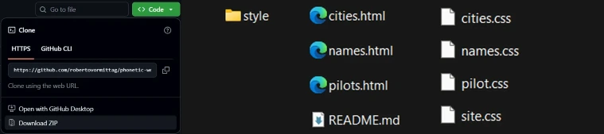
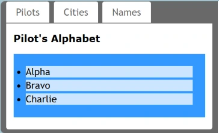
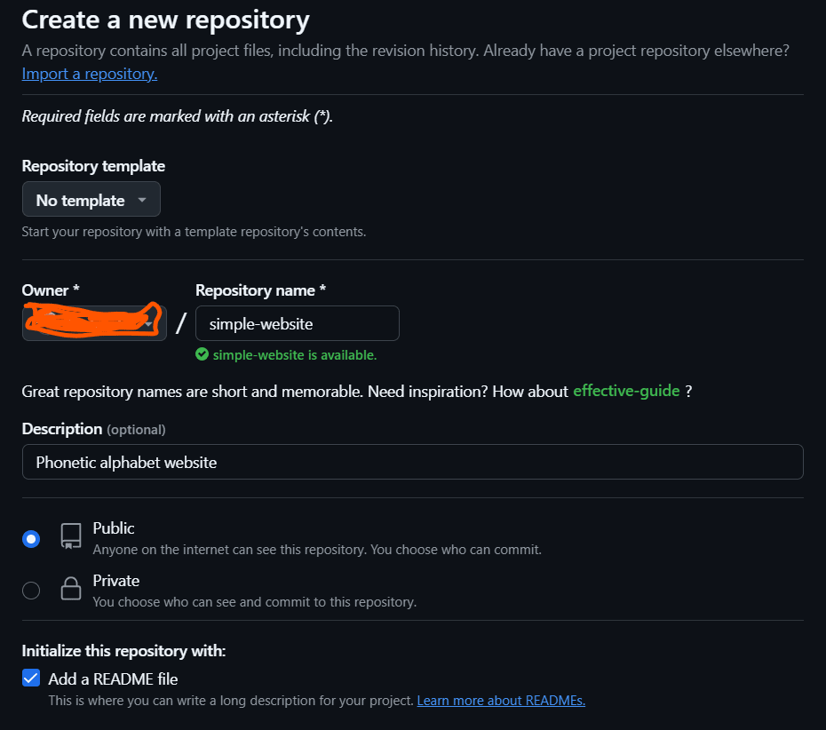

Seguiremos um roteiro baseado no livro "Practical Guide to Git and GitHub For Windows Users", escrito por Roberto Vormittag.
Por que “Phonetic Website”? A ideia apresentada no livro é usar palavras para representar letras, como ocorre na comunicação por rádio.
É mais fácil distinguir “Delta” e “Tango” do que “D” e “T”. Um dos alfabetos fonéticos mais conhecidos é o dos pilotos: “Alpha”, “Bravo”, “Charlie” (A, B e C).
Assim, o voo BA‑461 é comunicado como “Bravo Alpha Four Six One”.
O “Phonetic Website” usa o alfabeto dos pilotos, acrescido de nomes de cidades e pessoas, para praticar comandos do Git.
O site é estático e usa apenas HTML e CSS — você não precisa aprender técnicas avançadas de desenvolvimento web.
O repositório original está em: https://github.com/robertovormittag/phonetic-website
Faça o download do arquivo ZIP e extraia seu conteúdo.
Você encontrará três páginas HTML e uma pasta style contendo quatro arquivos CSS. O arquivo README.md pode ser apagado.


A imagem acima mostra as três abas de navegação, onde você encontra as primeiras letras do alfabeto. Com o avanço dos exercícios, você completará o alfabeto de A a Z.
Agora é hora de criar um repositório para hospedar seu projeto.
Estas são as etapas essenciais para iniciar seu projeto no GitHub:
